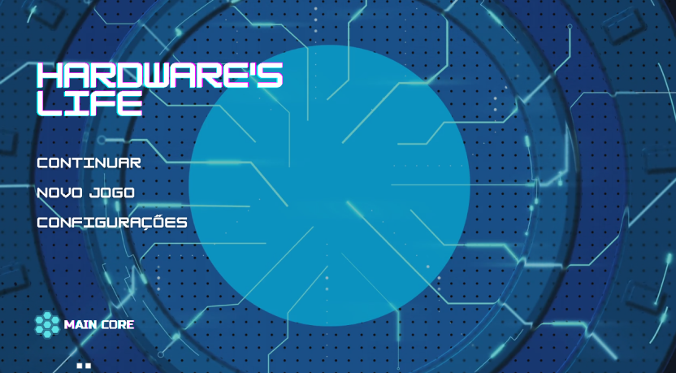

Como surgiu
Hardware's life foi elaborada para auxiliar os jogadores a expandir seus conhecimentos
de T.I, com uma forma divertida e diversificada de aprendizagem.
A ideia do jogo surgiu
para suprir a falta de acesso de alguns estudantes as peças físicas. Também, em meio a
pandemia, muitos não conseguiam fazer cursos presencias.
Mas com o Hardware's Life você aprende onde estiver e quando quiser.
História
Um jovem apaixonado por T.I decide encarar o mercado de trabalho.
Seu primeiro desafio é como service desk, nessa profissão aparece
diversos problemas do dia a dia que ajudam no desenvolvimento das
habilidades do personagem.
Em meio a isso tudo,
ele deve cumprir prazos, manter uma boa relação com os colegas e subir de cargo.
Também é possível seguir na carreira de freelancer, consertando,
montando e fazendo orçamentos de computadores.
Público-alvo
Hardware's life tem como público-alvo entusiastas e estudantes de T.I que buscam desenvolver ou melhorar o seu desempenho em manutenção de computadores, tanto software, quanto hardware. Também pode ser usado por professores para ensinar seus alunos de uma forma descontraída.
Engine
O jogo foi desenvolvido através da Unity Engine (C#).
